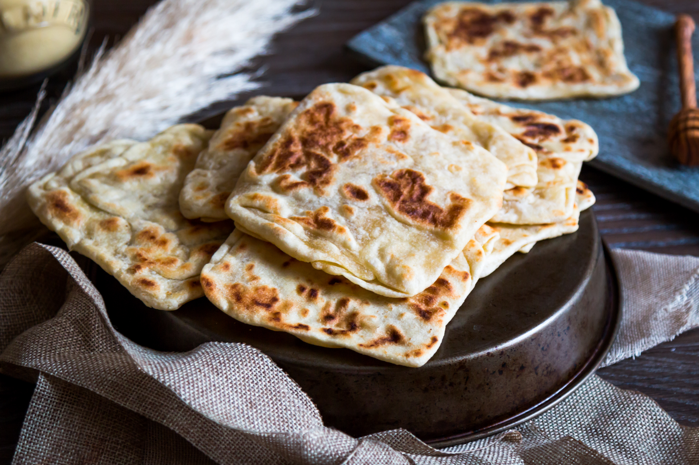

Msemen

Description
In Morocco, msemen (also known as "rghaif") are enjoyed for breakfast and/or teatime with anything sweet or savoury but I would advise having them at any time of the day, everyday!
Ingredients
- 150 gr plain flour and more for kneading
- 150 gr plain flour and more for kneading
- half a teaspoon salt
- 120 to 170 ml lukewarm water
- 4 tablespoons vegetable oil, divided
- 20 gr melted butter
Steps
- In a large bowl mix all the flours, salt, 120 ml lukewarm water and 2 tablespoons vegetable oil to form a dough. If the mixture is too dry and you can't form a dough, add a couple tablespoons of water bit by bit. Make sure you don't add too much water to the dough because it will make your dough very sticky and you won't be able to knead it. If that happens, add a bit of flour. When your dough is nicely done, lightly flour a worktop and knead for 15 minutes until light and soft.
- Once your dough is ready, divide the dough in small balls (for a 10x10 cm msemen make 5 cm diameter balls), place on a tray, lightly drizzle the balls with vegetable oil, cover with cling film and leave for 30 minutes in a warm place.
- After 30 minutes, mix the melted butter and 2 tablespoons vegetable oil in a small bowl.
- Transfer a ball of dough on a worktop, flatten it lightly and pour about ½ teaspoon of melted butter and vegetable oil mixture on top.
- Using your hands, flatten the dough as thin as you can to make a circle or a square without damaging it. You will have to be quick for this process otherwise the dough will dry out and you might damage it.
- Fold each side of the dough vertically and then horizontally towards the center to make a square. Place the folded msemen on a greased surface and cover with a cloth or a cling film. Repeat the same process until you have folded all the dough balls.
- Lightly oil and preheat a non-stick pan over medium-high heat.
- Transfer a folded msemen on a worktop, pour another half a teaspoon of butter and vegetable oil mixture on top and flatten it using your hands to about 0.5 cm thick.
- Gently place the flattened msemen on a warm pan and cook on each side turning several times until golden.
- Serve warm or at room temperature, with anything you fancy, sweet or savoury!